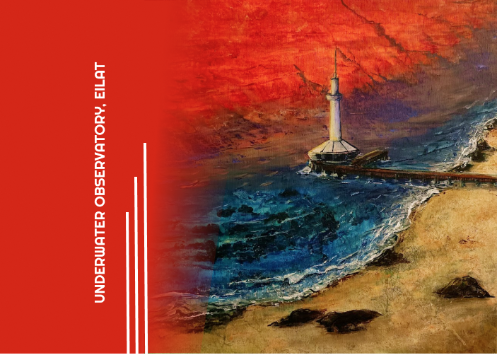
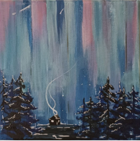
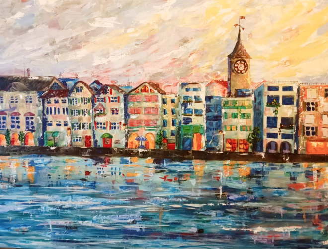
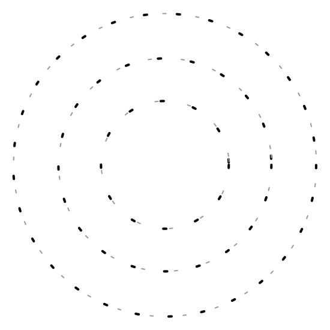

acrylic painting

Acrylic - is a great replacement for oil paints.
Yes, oil is a classic. But we live in a hot, sunny country, and acrylic is more relevant here in my opinion - it does not fade, it is practically not inferior to oil in properties, if you need three-dimensional strokes with a palette knife, an excellent palette of colors, simplicity from a technological point of view and speed of work - it is worth noting separately .
I paint with acrylics mainly on Italian or Chinese canvases, on stretchers.
I have not developed a priority technique yet, it all depends on my mood, or on the mood and effects that I want to convey in a particular work.
Below are examples of my work. You can buy some of them, it is also possible to leave a donation if you wish.
Thanks for visiting my site!
I paint with acrylics mainly on Italian or Chinese canvases, on stretchers.
I have not developed a priority technique yet, it all depends on my mood, or on the mood and effects that I want to convey in a particular work.
Below are examples of my work. You can buy some of them, it is also possible to leave a donation if you wish.
Thanks for visiting my site!
Since acrylic can be quickly worked on,
on inspiration days I can produce several miniature works at once!
These are an example of such a creative explosion.

Katrina Chudnovski
Spring 2022... “It took a lot of time for each of these voluminous works, the techniques here are different, but in any case, mixed media.
Both works are "watery", and to convey water in the picture is always a difficult task for me. Despite this, the work is finished, and flaunt on the wall.
It is worth noting that you need to look at "Switzerland" at a certain distance, you can compare, and come closer - near the water is not at all the same as from afar.
And so, I advise you to visit and get to know beautiful Zurich up close - beautiful nature, architecture, culture and people!....”
Both works are "watery", and to convey water in the picture is always a difficult task for me. Despite this, the work is finished, and flaunt on the wall.
It is worth noting that you need to look at "Switzerland" at a certain distance, you can compare, and come closer - near the water is not at all the same as from afar.
And so, I advise you to visit and get to know beautiful Zurich up close - beautiful nature, architecture, culture and people!....”

Zurich, Switzerland
Acrylic painting, canvas 80*60
Painting "Pier", canvas 60*80, mixed media
(acrylic).

digital artworks
As for digital drawing, I draw in raster format, like, for example, Procreate for iPad.
Not so long ago, I also mastered Illustrator for PC and Vectorizer for iPad.
Vector drawing is usually considered to be easier, but for me it was much more difficult! But there is a result.
Below you can see examples of my work. I plan to print some of them also on canvas with a stretcher.
Not so long ago, I also mastered Illustrator for PC and Vectorizer for iPad.
Vector drawing is usually considered to be easier, but for me it was much more difficult! But there is a result.
Below you can see examples of my work. I plan to print some of them also on canvas with a stretcher.
...” In last time i'm back to use Procreate for drawing, and want to work for new scills!
Also I have now profile in Gatty images and Shutterstock, and actually want in one of NFT platforms.
But its just holy crap for anyone who don't do this before and don't understend "how its work" you know (me).
This series of portraits is called "Characters and Types". It's actually quite abstract, don't you think? :) “...
Also I have now profile in Gatty images and Shutterstock, and actually want in one of NFT platforms.
But its just holy crap for anyone who don't do this before and don't understend "how its work" you know (me).
This series of portraits is called "Characters and Types". It's actually quite abstract, don't you think? :) “...
Katrina Chudnovski
from instagram
from instagram